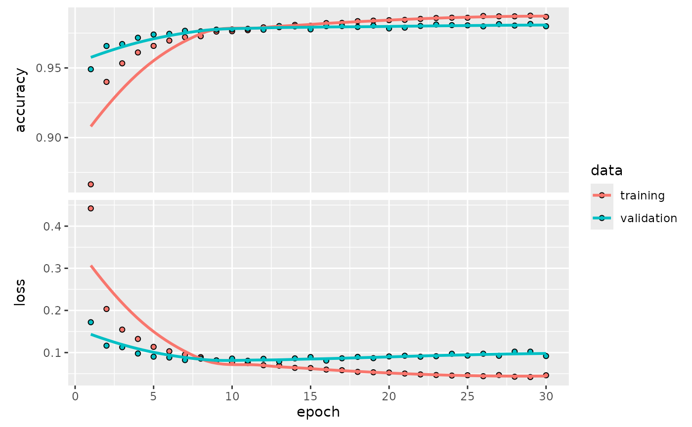
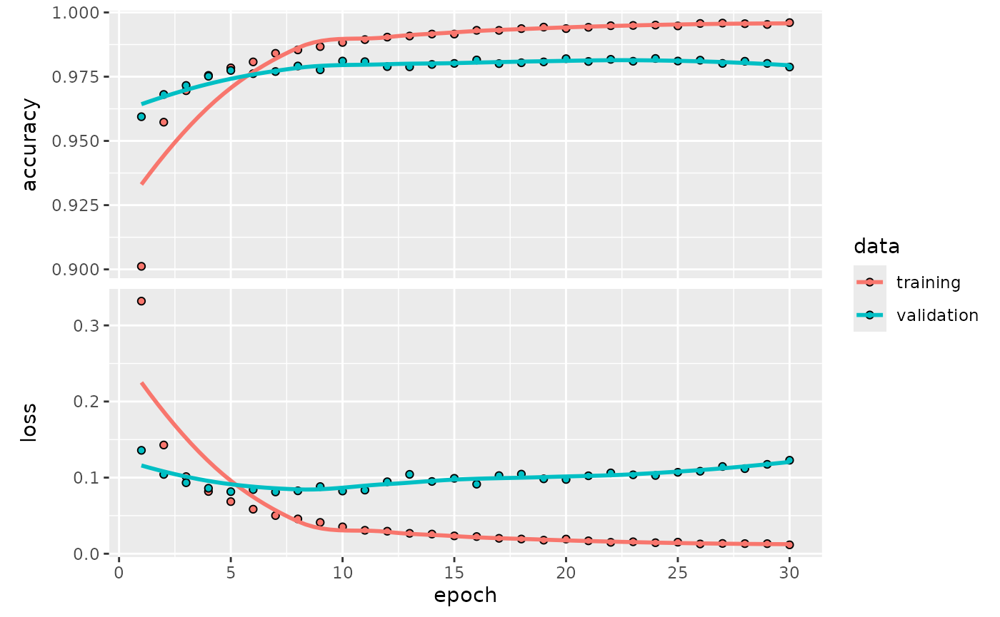

Getting Started with kerasnip
getting_started.RmdThe Core Idea: From Keras Layers to Tidymodels Specs
The keras3 package allows for building deep learning
models layer-by-layer, which is a powerful and flexible approach.
However, the tidymodels ecosystem is designed around
declarative model specifications, where you define what model
you want and which of its parameters you want to tune, rather than
building it imperatively.
kerasnip bridges this gap with a simple but powerful
concept: layer blocks. You define the components of
your neural network (e.g., an input block, a dense block, a dropout
block) as simple R functions. kerasnip then uses these
blocks as building materials to create a brand new parsnip
model specification function for you.
This new function behaves just like any other parsnip
model (e.g., rand_forest() or linear_reg()),
making it easy to integrate into tidymodels workflows.
Installation
You can install the development version of kerasnip from
GitHub. You will also need keras3.
install.packages("pak")
pak::pak("davidrsch/kerasnip")
pak::pak("rstudio/keras3")
# Install the backend
keras3::install_keras()We’ll start by loading kerasnip, tidymodels
and keras3:
library(kerasnip)
library(tidymodels)
#> ── Attaching packages ────────────────────────────────────── tidymodels 1.4.1 ──
#> ✔ broom 1.0.11 ✔ recipes 1.3.1
#> ✔ dials 1.4.2 ✔ rsample 1.3.1
#> ✔ dplyr 1.1.4 ✔ tailor 0.1.0
#> ✔ ggplot2 4.0.1 ✔ tidyr 1.3.1
#> ✔ infer 1.0.9 ✔ tune 2.0.1
#> ✔ modeldata 1.5.1 ✔ workflows 1.3.0
#> ✔ parsnip 1.4.0 ✔ workflowsets 1.1.1
#> ✔ purrr 1.2.0 ✔ yardstick 1.3.2
#> ── Conflicts ───────────────────────────────────────── tidymodels_conflicts() ──
#> ✖ purrr::discard() masks scales::discard()
#> ✖ dplyr::filter() masks stats::filter()
#> ✖ dplyr::lag() masks stats::lag()
#> ✖ recipes::step() masks stats::step()
library(keras3)
#>
#> Attaching package: 'keras3'
#> The following object is masked from 'package:yardstick':
#>
#> get_weightsA kerasnip MNIST Example
Let’s replicate the classic Keras introductory example, training a
simple MLP on the MNIST dataset, but using the kerasnip
workflow. This will demonstrate how to translate a standard Keras model
into a reusable, modular parsnip specification.
If you’re familiar with Keras, you’ll recognize the structure; if not, this is a perfect place to start. We’ll begin by learning the basics through a simple task: recognizing handwritten digits from the MNIST dataset.
The MNIST dataset contains 28×28 pixel grayscale images of handwritten digits, like these:

Each image comes with a label indicating which digit it represents. For example, the labels for the images above might be 5, 0, 4, and 1.
Preparing the Data
This step is identical to any other Keras model. We load the MNIST
dataset, reshape the predictors, and convert the outcome to a factor for
tidymodels.
mnist <- dataset_mnist()
#> Downloading data from https://storage.googleapis.com/tensorflow/tf-keras-datasets/mnist.npz
#> 0/11490434 ━━━━━━━━━━━━━━━━━━━━ 0s 0s/step 622592/11490434 ━━━━━━━━━━━━━━━━━━━━ 0s 0us/step 8699904/11490434 ━━━━━━━━━━━━━━━━━━━━ 0s 0us/step11490434/11490434 ━━━━━━━━━━━━━━━━━━━━ 0s 0us/step
x_train <- mnist$train$x
y_train <- mnist$train$y
x_test <- mnist$test$x
y_test <- mnist$test$y
# Reshape
x_train <- array_reshape(x_train, c(nrow(x_train), 784))
x_test <- array_reshape(x_test, c(nrow(x_test), 784))
# Rescale
x_train <- x_train / 255
x_test <- x_test / 255
# Convert outcomes to factors for tidymodels
# kerasnip will handle y convertion internally using keras3::to_categorical()
y_train_factor <- factor(y_train)
y_test_factor <- factor(y_test)
# For tidymodels, it's best to work with data frames
# Use I() to keep the matrix structure of x within the data frame
train_df <- data.frame(x = I(x_train), y = y_train_factor)
test_df <- data.frame(x = I(x_test), y = y_test_factor)The Standard Keras Approach (for comparison)
Before diving into the kerasnip workflow, let’s quickly
look at how this same model is built using standard keras3
code. This will help highlight the different approach
kerasnip enables.
# The standard Keras3 approach
model <- keras_model_sequential(input_shape = 784) |>
layer_dense(units = 256, activation = "relu") |>
layer_dropout(rate = 0.4) |>
layer_dense(units = 128, activation = "relu") |>
layer_dropout(rate = 0.3) |>
layer_dense(units = 10, activation = "softmax")
summary(model)
model |>
compile(
loss = "categorical_crossentropy",
optimizer = optimizer_rmsprop(),
metrics = "accuracy"
)
# The model would then be trained with model |> fit(...)The code above is imperative: you define each layer and add it to the
model step-by-step. Now, let’s see how kerasnip approaches
this by defining reusable components for a declarative,
tidymodels-friendly workflow.
Defining the Model with Reusable Blocks
The original Keras example interleaves layer_dense() and
layer_dropout(). With kerasnip, we can
encapsulate this pattern into a single, reusable block. This makes the
overall architecture cleaner and more modular.
# An input block to initialize the model.
# The 'model' argument is supplied implicitly by the kerasnip backend.
mlp_input_block <- function(model, input_shape) {
keras_model_sequential(input_shape = input_shape)
}
# A reusable "module" that combines a dense layer and a dropout layer.
# All arguments that should be tunable need a default value.
dense_dropout_block <- function(model, units = 128, rate = 0.1) {
model |>
layer_dense(units = units, activation = "relu") |>
layer_dropout(rate = rate)
}
# The output block for classification.
mlp_output_block <- function(model, num_classes) {
model |> layer_dense(units = num_classes, activation = "softmax")
}Now, we use create_keras_sequential_spec() to generate
our parsnip model function.
create_keras_sequential_spec(
model_name = "mnist_mlp",
layer_blocks = list(
input = mlp_input_block,
hidden_1 = dense_dropout_block,
hidden_2 = dense_dropout_block,
output = mlp_output_block
),
mode = "classification"
)Building and Fitting the Model
We can now use our new mnist_mlp() function. Notice how
its arguments, such as hidden_1_units and
hidden_1_rate, were automatically generated by
kerasnip. The names are created by combining the name of
the layer block (e.g., hidden_1) with the arguments of that
block’s function (e.g., units, rate).
To replicate the keras3 example, we’ll use both
hidden blocks and provide their parameters.
mlp_spec <- mnist_mlp(
hidden_1_units = 256,
hidden_1_rate = 0.4,
hidden_2_rate = 0.3,
hidden_2_units = 128,
compile_loss = "categorical_crossentropy",
compile_optimizer = optimizer_rmsprop(),
compile_metrics = c("accuracy"),
fit_epochs = 30,
fit_batch_size = 128,
fit_validation_split = 0.2
) |>
set_engine("keras")
# Fit the model
mlp_fit <- fit(mlp_spec, y ~ x, data = train_df)
mlp_fit |>
extract_keras_model() |>
summary()
#> Model: "sequential"
#> ┏━━━━━━━━━━━━━━━━━━━━━━━━━━━━━━━━━━━┳━━━━━━━━━━━━━━━━━━━━━━━━━━┳━━━━━━━━━━━━━━━┓
#> ┃ Layer (type) ┃ Output Shape ┃ Param # ┃
#> ┡━━━━━━━━━━━━━━━━━━━━━━━━━━━━━━━━━━━╇━━━━━━━━━━━━━━━━━━━━━━━━━━╇━━━━━━━━━━━━━━━┩
#> │ dense (Dense) │ (None, 256) │ 200,960 │
#> ├───────────────────────────────────┼──────────────────────────┼───────────────┤
#> │ dropout (Dropout) │ (None, 256) │ 0 │
#> ├───────────────────────────────────┼──────────────────────────┼───────────────┤
#> │ dense_1 (Dense) │ (None, 128) │ 32,896 │
#> ├───────────────────────────────────┼──────────────────────────┼───────────────┤
#> │ dropout_1 (Dropout) │ (None, 128) │ 0 │
#> ├───────────────────────────────────┼──────────────────────────┼───────────────┤
#> │ dense_2 (Dense) │ (None, 10) │ 1,290 │
#> └───────────────────────────────────┴──────────────────────────┴───────────────┘
#> Total params: 470,294 (1.79 MB)
#> Trainable params: 235,146 (918.54 KB)
#> Non-trainable params: 0 (0.00 B)
#> Optimizer params: 235,148 (918.55 KB)
mlp_fit |>
extract_keras_model() |>
plot(show_shapes = TRUE)
mlp_fit |>
extract_keras_history() |>
plot()
Evaluating Model Performance
The keras_evaluate() function provides a straightforward
way to assess the model’s performance on a test set, using the
underlying keras3::evaluate() method. It returns the loss
and any other metrics that were specified during the model compilation
step.
mlp_fit |> keras_evaluate(x_test, y_test)
#> 313/313 - 0s - 1ms/step - accuracy: 0.9817 - loss: 0.0907
#> $accuracy
#> [1] 0.9817
#>
#> $loss
#> [1] 0.09067331Making Predictions
Once the model is trained, we can use the standard
tidymodels predict() function to generate
predictions on new data. By default, predict() on a
parsnip classification model returns the predicted class
labels.
# Predict the class for the first 5 images in the test set
class_preds <- mlp_fit |>
predict(new_data = head(select(test_df, x)))
#> 1/1 - 0s - 43ms/step
class_preds
#> # A tibble: 6 × 1
#> .pred_class
#> <fct>
#> 1 7
#> 2 2
#> 3 1
#> 4 0
#> 5 4
#> 6 1To get the underlying probabilities for each class, we can set
type = "prob". This returns a tibble with a probability
column for each of the 10 classes (0-9).
# Predict probabilities for the first 5 images
prob_preds <- mlp_fit |>
predict(new_data = head(select(test_df, x)), type = "prob")
#> 1/1 - 0s - 24ms/step
prob_preds
#> # A tibble: 6 × 10
#> .pred_0 .pred_1 .pred_2 .pred_3 .pred_4 .pred_5 .pred_6 .pred_7
#> <dbl> <dbl> <dbl> <dbl> <dbl> <dbl> <dbl> <dbl>
#> 1 7.15 e-19 1.60e-13 9.32e-12 7.79e-11 8.23 e-19 1.28e-15 2.80e-27 1 e+ 0
#> 2 1.42 e-24 1.89e-10 1 e+ 0 1.54e-13 2.29 e-23 1.08e-23 8.72e-20 4.85e-21
#> 3 7.91 e-14 1 e+ 0 8.53e- 9 1.51e-11 5.09 e- 9 7.01e-12 2.34e- 9 1.10e- 8
#> 4 1.000e+ 0 1.62e-14 6.54e- 9 1.11e-13 7.76 e-11 1.95e-11 6.90e- 8 1.01e-11
#> 5 1.22 e-10 1.68e-12 1.68e-10 8.04e-12 1.000e+ 0 1.11e- 9 2.68e-11 4.96e- 6
#> 6 2.69 e-14 1 e+ 0 2.03e-10 2.15e-12 1.06 e- 8 1.62e-13 4.34e-11 2.52e- 8
#> # ℹ 2 more variables: .pred_8 <dbl>, .pred_9 <dbl>We can then compare the predicted class to the actual class for these images to see how the model is performing.
# Combine predictions with actuals for comparison
comparison <- bind_cols(
class_preds,
prob_preds
) |>
bind_cols(
head(test_df[, "y", drop = FALSE])
)
comparison
#> # A tibble: 6 × 12
#> .pred_class .pred_0 .pred_1 .pred_2 .pred_3 .pred_4 .pred_5 .pred_6
#> <fct> <dbl> <dbl> <dbl> <dbl> <dbl> <dbl> <dbl>
#> 1 7 7.15 e-19 1.60e-13 9.32e-12 7.79e-11 8.23 e-19 1.28e-15 2.80e-27
#> 2 2 1.42 e-24 1.89e-10 1 e+ 0 1.54e-13 2.29 e-23 1.08e-23 8.72e-20
#> 3 1 7.91 e-14 1 e+ 0 8.53e- 9 1.51e-11 5.09 e- 9 7.01e-12 2.34e- 9
#> 4 0 1.000e+ 0 1.62e-14 6.54e- 9 1.11e-13 7.76 e-11 1.95e-11 6.90e- 8
#> 5 4 1.22 e-10 1.68e-12 1.68e-10 8.04e-12 1.000e+ 0 1.11e- 9 2.68e-11
#> 6 1 2.69 e-14 1 e+ 0 2.03e-10 2.15e-12 1.06 e- 8 1.62e-13 4.34e-11
#> # ℹ 4 more variables: .pred_7 <dbl>, .pred_8 <dbl>, .pred_9 <dbl>, y <fct>Example 2: Tuning the Model Architecture
Now we’ll showcase the main strength of kerasnip: tuning
the network architecture itself. We can treat the number of layers, and
the parameters of those layers, as hyperparameters to be optimized by
tune.
Using the mnist_mlp spec we just created, let’s define a
tunable model.
# Define a tunable specification
# We set num_hidden_2 = 0 to disable the second hidden block
# for this tuning example
tune_spec <- mnist_mlp(
num_hidden_1 = tune(),
hidden_1_units = tune(),
hidden_1_rate = tune(),
num_hidden_2 = 0,
compile_loss = "categorical_crossentropy",
compile_optimizer = optimizer_rmsprop(),
compile_metrics = c("accuracy"),
fit_epochs = 30,
fit_batch_size = 128,
fit_validation_split = 0.2
) |>
set_engine("keras")
# Create a workflow
tune_wf <- workflow(y ~ x, tune_spec)Next, we define the search space for our tunable parameters using
dials.
# Define the tuning grid
params <- extract_parameter_set_dials(tune_wf) |>
update(
num_hidden_1 = dials::num_terms(c(1, 3)),
hidden_1_units = dials::hidden_units(c(64, 256)),
hidden_1_rate = dials::dropout(c(0.2, 0.4))
)
grid <- grid_regular(params, levels = 3)
grid
#> # A tibble: 27 × 3
#> num_hidden_1 hidden_1_units hidden_1_rate
#> <int> <int> <dbl>
#> 1 1 64 0.2
#> 2 2 64 0.2
#> 3 3 64 0.2
#> 4 1 160 0.2
#> 5 2 160 0.2
#> 6 3 160 0.2
#> 7 1 256 0.2
#> 8 2 256 0.2
#> 9 3 256 0.2
#> 10 1 64 0.3
#> # ℹ 17 more rows
# Using only the first 100 rows for speed. The real call
# should be: folds <- vfold_cv(train_df, v = 3)
folds <- vfold_cv(train_df[1:100, ], v = 3)
tune_res <- tune_grid(
tune_wf,
resamples = folds,
grid = grid,
metrics = metric_set(accuracy),
control = control_grid(save_pred = FALSE, save_workflow = TRUE)
)
#> 2/2 - 0s - 29ms/step
#> 2/2 - 0s - 31ms/step
#> 2/2 - 0s - 36ms/step
#> 2/2 - 0s - 27ms/step
#> 2/2 - 0s - 32ms/step
#> 2/2 - 0s - 35ms/step
#> 2/2 - 0s - 28ms/step
#> 2/2 - 0s - 32ms/step
#> 2/2 - 0s - 36ms/step
#> 2/2 - 0s - 29ms/step
#> 2/2 - 0s - 32ms/step
#> 2/2 - 0s - 34ms/step
#> 2/2 - 0s - 27ms/step
#> 2/2 - 0s - 33ms/step
#> 2/2 - 0s - 37ms/step
#> 2/2 - 0s - 27ms/step
#> 2/2 - 0s - 32ms/step
#> 2/2 - 0s - 36ms/step
#> 2/2 - 0s - 27ms/step
#> 2/2 - 0s - 32ms/step
#> 2/2 - 0s - 36ms/step
#> 2/2 - 0s - 28ms/step
#> 2/2 - 0s - 30ms/step
#> 2/2 - 0s - 37ms/step
#> 2/2 - 0s - 28ms/step
#> 2/2 - 0s - 32ms/step
#> 2/2 - 0s - 34ms/step
#> 2/2 - 0s - 26ms/step
#> 2/2 - 0s - 31ms/step
#> 2/2 - 0s - 35ms/step
#> 2/2 - 0s - 242ms/step
#> 2/2 - 0s - 34ms/step
#> 2/2 - 0s - 37ms/step
#> 2/2 - 0s - 28ms/step
#> 2/2 - 0s - 31ms/step
#> 2/2 - 0s - 36ms/step
#> 2/2 - 0s - 27ms/step
#> 2/2 - 0s - 32ms/step
#> 2/2 - 0s - 35ms/step
#> 2/2 - 0s - 28ms/step
#> 2/2 - 0s - 31ms/step
#> 2/2 - 0s - 37ms/step
#> 2/2 - 0s - 28ms/step
#> 2/2 - 0s - 32ms/step
#> 2/2 - 0s - 35ms/step
#> 2/2 - 0s - 27ms/step
#> 2/2 - 0s - 30ms/step
#> 2/2 - 0s - 34ms/step
#> 2/2 - 0s - 28ms/step
#> 2/2 - 0s - 30ms/step
#> 2/2 - 0s - 36ms/step
#> 2/2 - 0s - 28ms/step
#> 2/2 - 0s - 31ms/step
#> 2/2 - 0s - 36ms/step
#> 2/2 - 0s - 27ms/step
#> 2/2 - 0s - 32ms/step
#> 2/2 - 0s - 36ms/step
#> 2/2 - 0s - 27ms/step
#> 2/2 - 0s - 31ms/step
#> 2/2 - 0s - 34ms/step
#> 2/2 - 0s - 26ms/step
#> 2/2 - 0s - 32ms/step
#> 2/2 - 0s - 35ms/step
#> 2/2 - 0s - 27ms/step
#> 2/2 - 0s - 33ms/step
#> 2/2 - 0s - 35ms/step
#> 2/2 - 0s - 27ms/step
#> 2/2 - 0s - 32ms/step
#> 2/2 - 0s - 37ms/step
#> 2/2 - 0s - 29ms/step
#> 2/2 - 0s - 33ms/step
#> 2/2 - 0s - 36ms/step
#> 2/2 - 0s - 28ms/step
#> 2/2 - 0s - 32ms/step
#> 2/2 - 0s - 37ms/step
#> 2/2 - 0s - 29ms/step
#> 2/2 - 0s - 35ms/step
#> 2/2 - 0s - 39ms/step
#> 2/2 - 0s - 28ms/step
#> 2/2 - 0s - 33ms/step
#> 2/2 - 0s - 37ms/stepFinally, we can inspect the results to find which architecture performed the best. First, a summary table:
# Show the summary table of the best models
show_best(tune_res, metric = "accuracy")
#> # A tibble: 5 × 9
#> num_hidden_1 hidden_1_units hidden_1_rate .metric .estimator mean n
#> <int> <int> <dbl> <chr> <chr> <dbl> <int>
#> 1 1 256 0.3 accuracy multiclass 0.800 3
#> 2 1 256 0.2 accuracy multiclass 0.790 3
#> 3 2 160 0.400 accuracy multiclass 0.790 3
#> 4 2 160 0.2 accuracy multiclass 0.780 3
#> 5 2 256 0.3 accuracy multiclass 0.780 3
#> # ℹ 2 more variables: std_err <dbl>, .config <chr>Now that we’ve identified the best-performing hyperparameters, our
final step is to create and train the final model. We use
select_best() to get the top parameters,
finalize_workflow() to update our workflow with them, and
then fit() one last time on our full training dataset.
# Select the best hyperparameters
best_hps <- select_best(tune_res, metric = "accuracy")
# Finalize the workflow with the best hyperparameters
final_wf <- finalize_workflow(tune_wf, best_hps)
# Fit the final model on the full training data
final_fit <- fit(final_wf, data = train_df)We can now inspect our final, tuned model.
# Print the model summary
final_fit |>
extract_fit_parsnip() |>
extract_keras_model() |>
summary()
#> Model: "sequential_82"
#> ┏━━━━━━━━━━━━━━━━━━━━━━━━━━━━━━━━━━━┳━━━━━━━━━━━━━━━━━━━━━━━━━━┳━━━━━━━━━━━━━━━┓
#> ┃ Layer (type) ┃ Output Shape ┃ Param # ┃
#> ┡━━━━━━━━━━━━━━━━━━━━━━━━━━━━━━━━━━━╇━━━━━━━━━━━━━━━━━━━━━━━━━━╇━━━━━━━━━━━━━━━┩
#> │ dense_246 (Dense) │ (None, 256) │ 200,960 │
#> ├───────────────────────────────────┼──────────────────────────┼───────────────┤
#> │ dropout_164 (Dropout) │ (None, 256) │ 0 │
#> ├───────────────────────────────────┼──────────────────────────┼───────────────┤
#> │ dense_247 (Dense) │ (None, 10) │ 2,570 │
#> └───────────────────────────────────┴──────────────────────────┴───────────────┘
#> Total params: 407,062 (1.55 MB)
#> Trainable params: 203,530 (795.04 KB)
#> Non-trainable params: 0 (0.00 B)
#> Optimizer params: 203,532 (795.05 KB)
# Plot the training history
final_fit |>
extract_fit_parsnip() |>
extract_keras_history() |>
plot()
This result shows that tune has tested various network
depths, widths, and dropout rates, successfully finding the
best-performing combination within the search space. By using
kerasnip, we were able to integrate this complex
architectural tuning directly into a standard tidymodels
workflow.